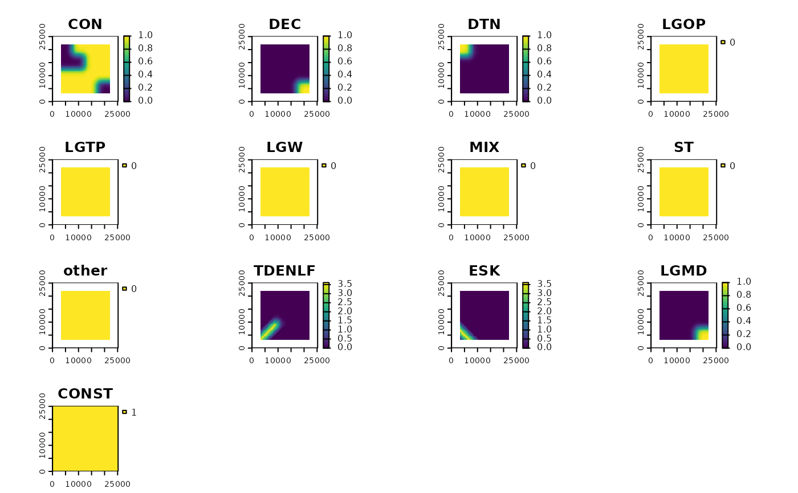
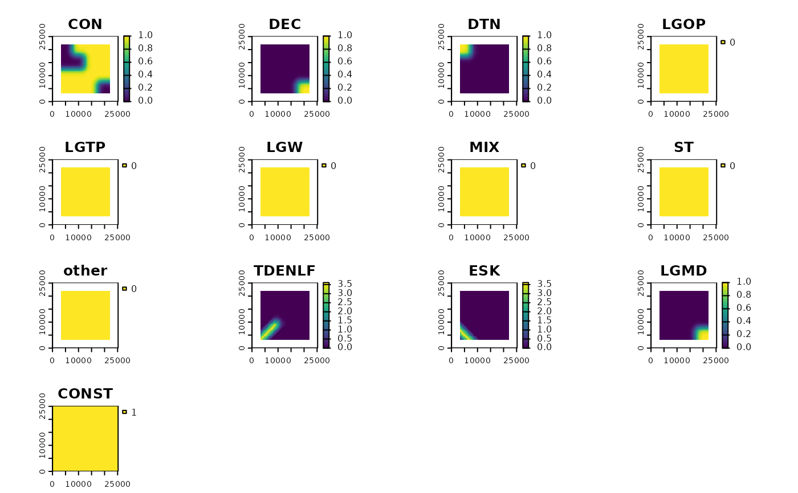

Calculate the relative probability of caribou habitat use in spring, summer, fall and winter for caribou ranges in Northern Ontario, based on Hornseth and Rempel, 2016.
Usage
caribouHabitat(
landCover = NULL,
esker = NULL,
linFeat = NULL,
projectPoly = NULL,
caribouRange,
coefTable = coefTableHR,
...
)Source
Rempel, R.S., Carlson, M., Rodgers, A.R., Shuter, J.L., Farrell, C.E., Cairns, D., Stelfox, B., Hunt, L.M., Mackereth, R.W. and Jackson, J.M., 2021. Modeling Cumulative Effects of Climate and Development on Moose, Wolf, and Caribou Populations. The Journal of Wildlife Management.
Hornseth, M.L. and Rempel, R.S., 2016. Seasonal resource selection of woodland caribou (Rangifer tarandus caribou) across a gradient of anthropogenic disturbance. Canadian Journal of Zoology, 94(2), pp.79-93. https://doi.org/10.1139/cjz-2015-0101
Arguments
- landCover
filename, SpatRaster or RasterLayer. Provincial landcover class
- esker
filename, SpatRaster or RasterLayer or sf object. Eskers. If it is a raster then it should be esker density in m^2/ha.
- linFeat
filename, SpatRaster, RasterLayer, or sf object or a list of these that will be combined. Linear features. If it is a raster then it should be linear feature density in m^2/ha. If a raster is provided as a list element then ptDensity will be used to assign a density of linear features in the pixel (default is 1).
- projectPoly
filename or sf object. Polygon defining the project area. If caribouRange is a data.frame this must have a column called Range with the name of the caribou range represented by the polygon which corresponds to the Range column in the caribouRange data.frame
- caribouRange
character or data.frame. If character the range where caribou were located. See
unique(coefTableHR$Range)for options. If data.frame it must have two columns Range and coefRange. Range is the name of the geographical area and is used to link the table to the providedprojectPolypolygons. coefRange is the name of the caribou range that the coefficients should be used from.- coefTable
data.frame. table of coefficients to be used in the model. Must match the format and naming of the default
coefTableHR- ...
optional arguments:
natDist: filename, SpatRaster or RasterLayer. Presence or absence of natural disturbance, primarily by fire. This should reflect cumulative natural disturbance over the preceding 30 years
anthroDist: filename, SpatRaster or RasterLayer. Anthropogenic disturbance including harvest.
eskerSave: filename to save rasterized esker data.
linFeatSave: filename to save rasterized linear feature data.
padProjPoly: logical. Should the area around the
projectPolybe used to avoid edge effects? If FALSE, the default, only data from inside theprojectPolyis used. If TRUE thenprojectPolyis buffered and the other variables are clipped to the extent of the buffered area. Results are always clipped to the originalprojectPoly. It is ideal to set this to TRUE and provide a data set that is larger than theprojectPolyto avoid edge effects.padFocal: logical. This value is passed to the pad argument in
terra::focal, if it is FALSE then cells near the edge will return NA, if it is TRUE a value will be returned for each cell that assumes cells outside the input data are 0 for all resource types. This is not a good assumption and should be used with caution.saveOutput: character. The filename to save the raster of habitat use probabilities to. Note this will overwrite any existing files. The .grd format is recommended because it will preserve layer names when the file is reloaded.
winArea: number. This is the area of the moving window that is used to average proportions of each resource type at broader spatial scales. The Hornseth and Rempel (2016) models used specific window areas which are defined within this package and used as the default. You should only specify a window size if you have good reason.
doScale: logical. FALSE by default. Set to TRUE only if you have supplied coefficients that were trained on standardized data which will cause the input data to be scaled.
ptDensity: number. Only used if a list element in
linFeatis a raster. SeerasterizeLineDensity().preppedData: list. A list containing pre-prepared input data sets. If not NULL then data checks will be skipped. Names must match argument names except that
landCovershould be calledrefRastandprojectPolyshould be calledprojectPolyOrig. SeeloadSpatialInputs().
Value
A CaribouHabitat Object see CaribouHabitat
Details
Caribou habitat use is calculated based on the availability of resources and
the presence of disturbances on the landscape. The primary source of resource
information is the landCover but this is updated based on disturbance
information. All data sources can be provided either as filenames or as
spatial files. If filenames are provided then the landCover is assumed
to be the Provincial Landcover for Ontario and is converted to resource types
using reclassPLC(). The result is a CaribouHabitat object which has
methods defined for plotting and extracting the results. To update an existing
CaribouHabitat object with new data see updateCaribou().
See also
CaribouHabitat for information on the object
returned, updateCaribou() for updating an existing
CaribouHabitat object, and plot() for the plot method.
Caribou habitat functions:
CaribouHabitat-class,
calcBinaryUse(),
coefTableHR,
coefTableStd,
fnlcToResType,
loadSpatialInputs(),
plcToResType,
rasterizeLineDensity(),
reclassPLC(),
resTypeCode,
results(),
rfuToResType,
threshTable,
updateCaribou()
Examples
# create example rasters
lc <- terra::rast(xmin = 0, xmax = 25000, ymin = 0, ymax = 25000,
resolution = 250, crs = "EPSG:5070")
lc[] <- 0
nd <- lc
nd[1:30, 1:30] <- 1
ad <- lc
ad[30:50, 3:50] <- 1
lc[] <- 1
lc[70:100, 70:100] <- 2
# create sf objects
lf <- sf::st_as_sf(sf::st_sfc(list(sf::st_linestring(matrix(c(0, 0, 10000, 10000),
ncol = 2, byrow = TRUE))),
crs = 5070))
esk <- sf::st_as_sf(sf::st_sfc(list(sf::st_linestring(matrix(c(0, 10000, 10000, 0),
ncol = 2, byrow = TRUE))),
crs = 5070))
projPol <- sf::st_sf(sf::st_as_sfc(sf::st_bbox(ad)))
# calculate relative probability of use
res <- caribouHabitat(landCover = lc,
linFeat = lf,
esker = esk,
natDist = nd,
anthroDist = ad,
projectPoly = projPol,
caribouRange = "Nipigon",
winArea = 1000 #leave as default NULL except for small examples
)
#> cropping linFeat to extent of projectPoly
#> cropping esker to extent of projectPoly
#> Applying moving window.
# plot the relative probability of use
plot(res)
#> tmap must be attached with library(tmap) to be used. Using terra instead.
 # plot the predictor variables
plot(results(res, type ="processedData"))

# plot the predictor variables
plot(results(res, type ="processedData"))
